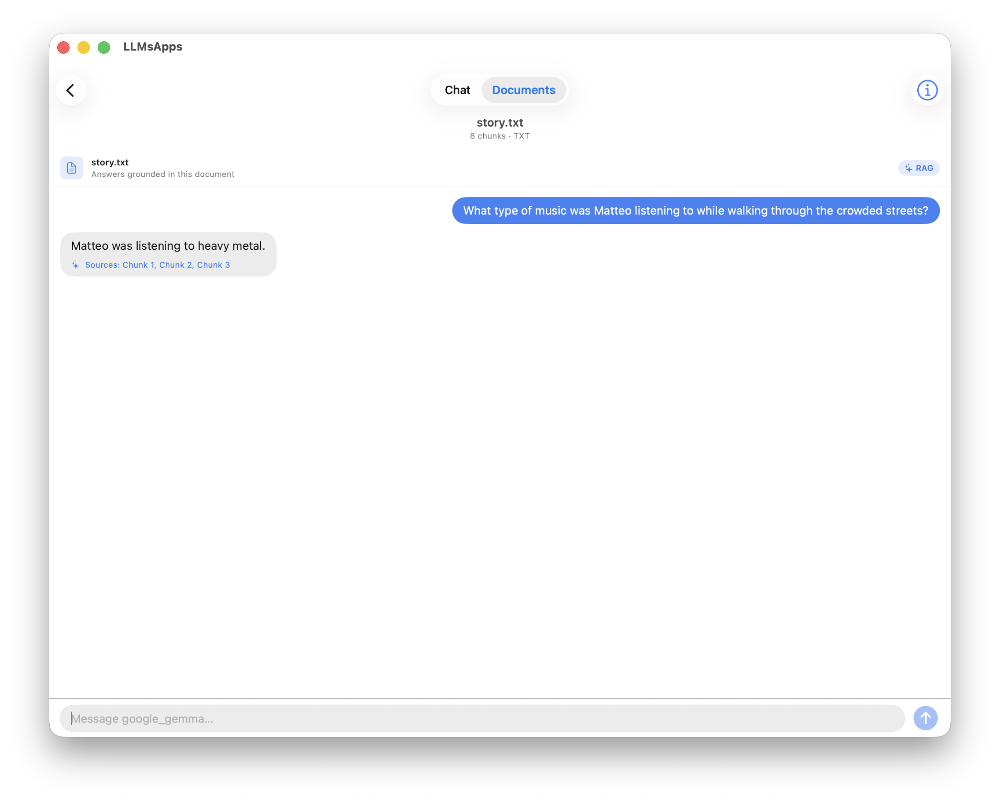
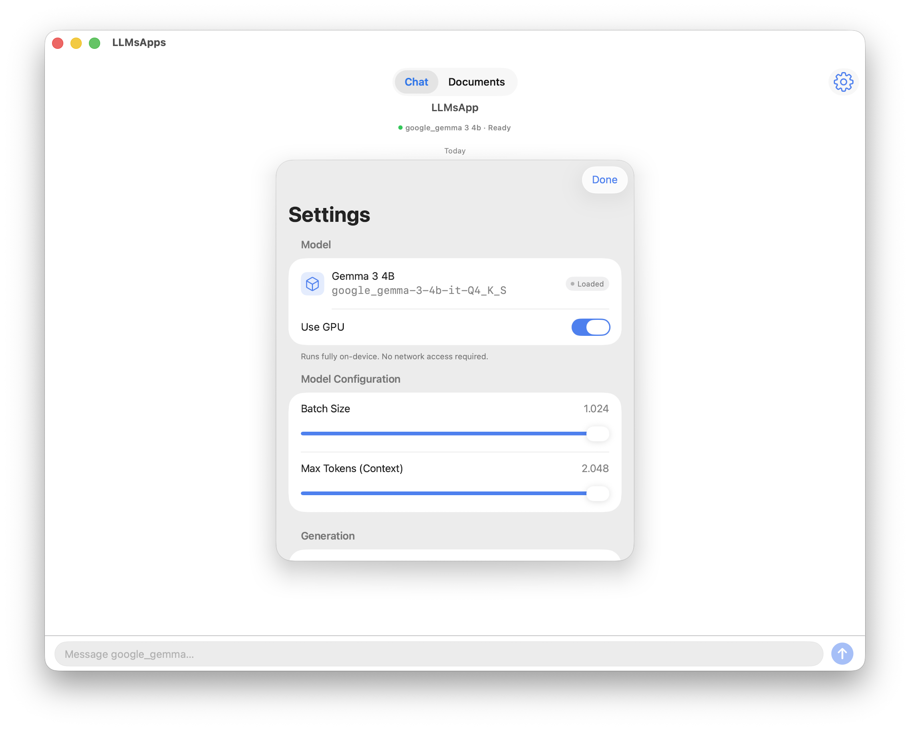
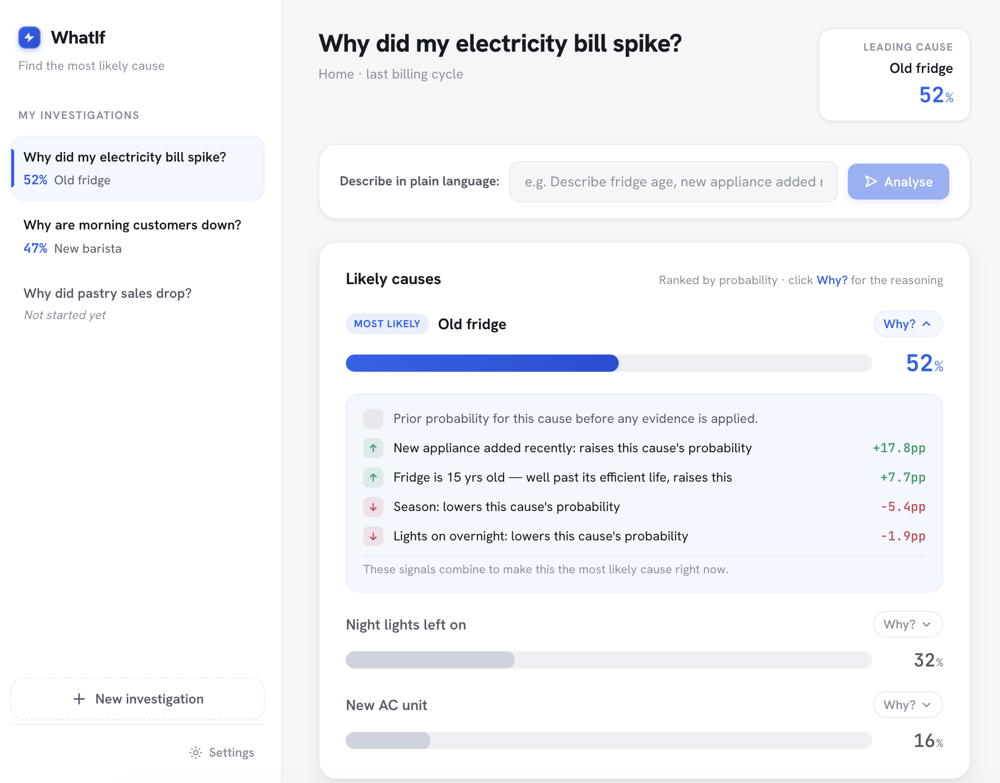

iOS / Swift / Metal
LLMsApps
A privacy-first iOS application implementing a RAG pipeline entirely on-device, leveraging Apple Silicon.


React / Math
WhatIf
A web-based probabilistic reasoning engine turning guesswork into calculated strategy.

Three.js / React / AI
Jarvis 3D AI
A fully interactive, voice-driven 3D avatar bridging text-based LLMs with natural, multimodal human interaction.
View Case Study & Gallery